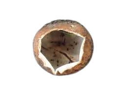
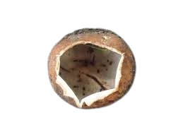

Descripción morfológica
Geopora sumneriana, conocida como "copa de tierra pilosa", es un ascomiceto hipogeo (subterráneo) de la familia Pyronemataceae que emerge parcialmente al madurar. Sus cuerpos fructíferos tienen forma de copa irregular de 2-5 cm de diámetro, con el himenio (superficie fértil) liso de color crema a marrón claro en el interior, y el exterior cubierto de pelos marrones gruesos que le dan aspecto lanudo. El margen permanece enrollado hacia dentro incluso en ejemplares maduros.
Características distintivas
- Indumento externo: Pelos marrón oscuro (300-500 µm de largo) dispuestos en mechones.
- Himenio: Superficie lisa o ligeramente arrugada, color crema que se oscurece con la edad.
- Esporas: Elipsoidales, hialinas, de 18-24 × 10-14 µm con un gutula prominente.
- Base: Pseudorraíz que se une a restos vegetales subterráneos.
Distribución y hábitat
Especie poco común pero ampliamente distribuida en Europa, Norteamérica y partes de Asia. Crece en bosques de frondosas (especialmente bajo hayas y robles) y coníferas, en suelos calcáreos bien drenados. Fructifica desde finales de invierno hasta principios de primavera (febrero-abril en el hemisferio norte), a menudo parcialmente enterrada en la hojarasca o junto a troncos en descomposición.
Condiciones ecológicas
- Sustrato: Madera enterrada en descomposición y restos vegetales ricos en celulosa.
- Microclima: Requiere humedad constante pero sin encharcamiento.
- Asociaciones: Posible relación saprofítica con raíces muertas de árboles.
Ciclo de vida y estrategia reproductiva
Hongo saprótrofo que desarrolla cuerpos fructíferos hipogeos que emergen parcialmente al madurar. Las esporas son dispersadas pasivamente por el impacto de gotas de lluvia (dispersión por salpicadura). El desarrollo desde primordio hasta madurez toma 3-4 semanas. Los ascos (estructuras productoras de esporas) son operculados, liberando activamente las esporas cuando hay humedad suficiente.
Etapas clave
- Fase subterránea: Formación de primordios esféricos cubiertos de pelos.
- Emergencia: La copa se abre al nivel del suelo pero permanece parcialmente enterrada.
- Maduración: Los bordes se enrollan hacia dentro para proteger el himenio en tiempo seco.
Importancia ecológica
- 🔄 Reciclaje nutrientes: Descompone lignocelulosa en suelos forestales.
- 🔬 Interés científico: Modelo para estudios de hongos hipogeos emergentes.
- 📸 Rareza: Especie buscada por fotógrafos micológicos por su singularidad.
Datos fascinantes
- Historia taxonómica: Descrita por primera vez en 1875 por Mordecai Cubitt Cooke.
- Adaptación: Los pelos externos protegen contra la desecación y depredadores.
- Estacionalidad: Uno de los pocos hongos que fructifican en invierno.
- Confusiones: A menudo pasa inadvertido al confundirse con restos vegetales.
Conservación y observación
Especie sensible a perturbaciones del hábitat:
- Evitar remoción de hojarasca en bosques donde aparece.
- No recolectar ejemplares (fotografiar in situ).
- Reportar avistamientos a sociedades micológicas para estudios de distribución.
Técnicas de búsqueda
- Examinar cuidadosamente alrededor de árboles viejos en invierno/primavera.
- Buscar pequeños montículos de tierra con pelos marrones visibles.
- Usar una lupa para observar ejemplares inmaduros casi subterráneos.
Diferencias con especies similares
- Geopora arenosa: Más pequeña (0.5-2 cm) y con pelos más cortos.
- Sepultaria sumneriana: Himenio más oscuro y margen no enrollado.
- Trichophaea woolhopeia: Crece sobre madera visible, no enterrada.